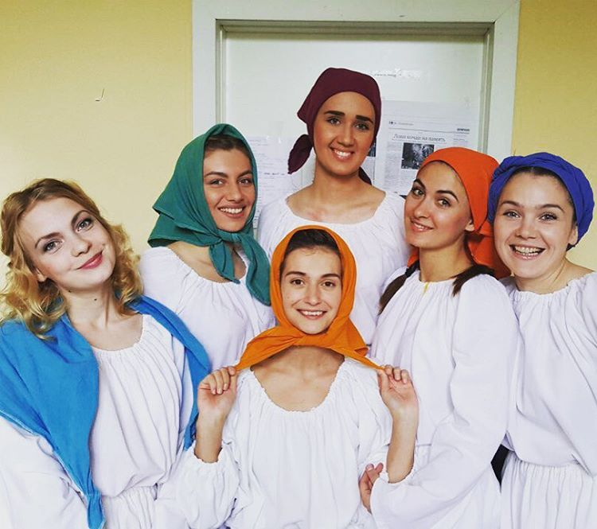
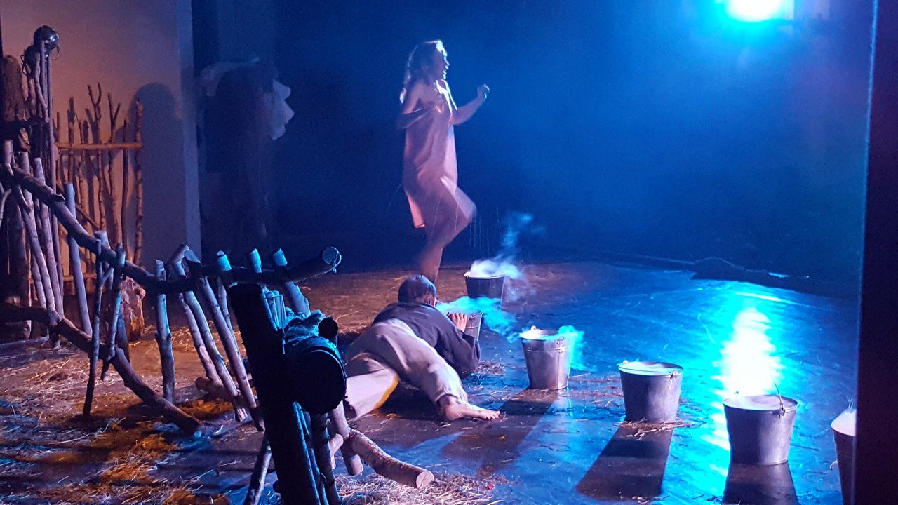
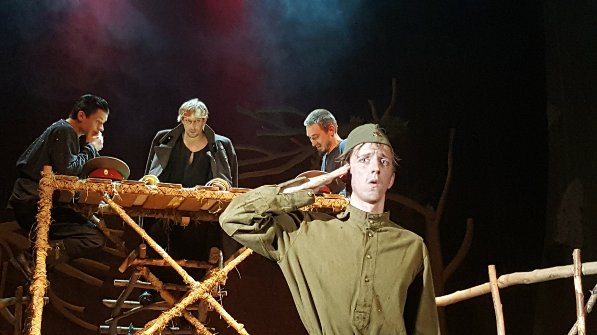
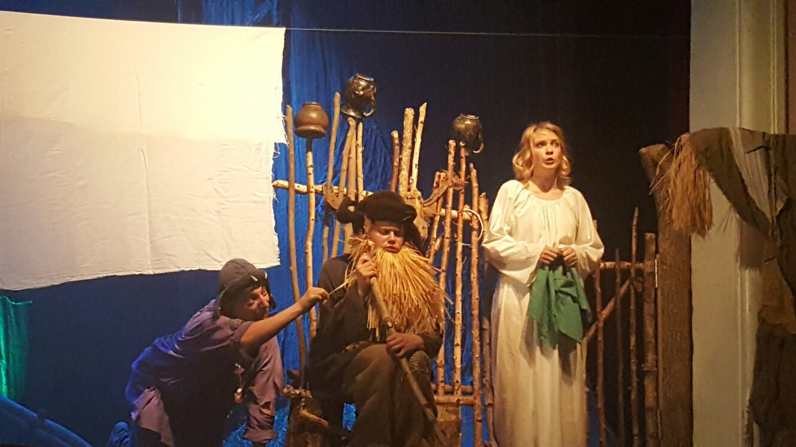

Одна абсолютно счастливая деревня

Действующие лица:
персонажи 5чел(жительницы села,сцена"в бане","коровы"); Полина,
Михеев, Председатель села,Житель села, Тракторист, Юродивый,
Чучело, Пленный немец, Рядовой Куропаткин, Полковник, 2 офицера
Список костюмов
- Девочки(5):
- белые рубаха+юбка - 5 шт
- белые платки - 5 шт
- цветные платки - 5 шт
- фартуки цветные - 5 шт
- черные рубаха+юбка+платок - 5 шт
- льняные платья - 5 шт
- туфли черные - 5 пар
- Полина, главная героиня:

- белые рубаха+юбка
- платок голубой
- сорочка нательная
- платье грубой вязки
- фуфайка
- носки вязаные+галоши+сапоги
- красный широкий пояс
- веночек
- Михеев, главный герой
- рубаха черная
- штаны из мешковины
- белый нательный костюм
- холщевая сумка с конфетами
- праздничная льняная рубаха
- пояс тонкий синий
- веночек
- Мальчики:

- черные брюки+рубаха - 4 шт
- сапоги - 4 пары
- шинель - 2 шт
- пиджак военный+кепка
- ремень военный - 3 шт
- фуражка военная - 2 шт
- Рядовой Куропаткин
- гимнастерка
- пилотка
- ремень военный
- Пленный немец
- пиджак серый
- пилотка серая
- фуфайка+шапка-ушанка
- Пугало

- рубаха черная
- штаны из мешковины
- шляпа соломенная
- борода из соломы
- валенки
- шапка-ушанка
- Юродивый
- рубаха фиолетовая
- штаны рваные зеленые
- платочек салатного цвета
- Председатель
- коричневые брюки
- коричневый пиджак
- шляпа
- баян, портфель -Председатель
- пропитанный "кровью" бинт -Полковник
- фонар -Михеев
- стакан с подстаканником -2, ложечка чайная-2, "беломор", спички -2 офицера
- колокольчики -Девочки
- ткань для стирки -2
- большая белая ткань
- крест для 1 "сплетницы"